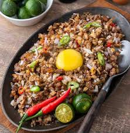

Classic Sisig

Description
This guide will help you how to make a classic sisig
Ingredients:
- 1 kg pig’s face (maskara: ears, cheeks, snout)
- 200 g pork liver
- ½ cup pork belly (optional, for added fat)
- 1 large red onion, finely chopped
- 3–4 green chilies (siling pansigang), sliced
- 2–3 bird’s eye chilies (siling labuyo), chopped (optional for spice)
- 3 tbsp calamansi juice (or lemon juice)
- 2 tbsp soy sauce
- 2 tbsp mayonnaise (optional)
- Salt & pepper to taste
- 1 raw egg (optional, for sizzling plate)
Steps:
- Boil pork parts – In a pot, boil pig’s face and liver with onion, garlic, bay leaves, peppercorns, and salt for 1–1.5 hrs until tender.
- Grill – Charcoal grill or broil the boiled pork until slightly crispy.
- Chop finely – Dice pork and liver into small pieces.
- Mix – In a bowl, combine pork, onions, chilies, calamansi juice, soy sauce, and optional mayonnaise.
- Serve sizzling – Heat a cast-iron plate with butter, add the sisig, and crack a raw egg on top.
Home